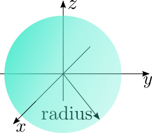

NXgeometry and NXshape - documentation and review¶
NXgeometry¶
Geometries in Nexus are described using the NXgeometry base class. As shown in the UML diagramm on the right side this class consists basically of three other base classes (composition): NXshape, NXtranslation, and NXorientation. As far as I understand the NXgeometry class it describes a single shape (geometric object). This fact makes the dimensionality of several attributes of the the other classes a bit odd (see below). However, aside from this NXgeometry is quite ok.
Note: the NeXus User Guide describes the coordinate system here:
NXtranslation¶
NXtranslation
has an attribute distances of shape [numobj,3]. If, as stated above,
NXgeometry seems to describe only a single shape the first dimension
has no meaning. A dimensionality of [3] would be enough for this
field.
NXorientation¶
NXorientation
has an attribute value of shape [numobj,6]. If, as stated above,
NXgeometry seems to describe only a single shape the first dimension
has no meaning. A dimensionality of [6] would be enough for this
field.
NXshape¶
This is where all the problems start. In fact there are three issues with this class:
as for NXtranslation and NXorientation the first dimension of the size attribute (
numobj) has no meaningwhat is the attribute direction good for (its values convex and concave are not defined)
last but not least: the shapes are not defined well (this is the major issue)
The last problem will be discussed in more detail in the following sections.
Definition of geometric primitives¶
Every geometric primitive requires a local coordinate frame. All translations applied on a primitive will act on the origin of this local frame. Additionally, the origin of this frame of reference will act as a center for all rotations applied on the primitive. Unfortunately, the 9 geometric primitives currently available in Nexus are not defined in such a sense. The following sections provide some possible definitions of these primitives along with the layout of their parameters stored in the size attribute of NXshape.
Shape and coordinate frame for an nxflat

An nxcylinder in its local frame
An nxbox in its local frame
nxflat¶
nxflag can be considered as a flat plane. The plane defines the x-y-plane of its local coordinate frame. The z-axis of this system is oriented so that the resulting reference frame is a right-handed one. The shape has two parameters: its height and width which will be stored in the size attribute of NXshape as follows
NXshape::size[2]={width,height}
nxcylinder¶
The origin of the local coordinate frame for nxcylinder is in the center of its bottom. An nxcylinder has 5 parameters: radius, height, and the three components of the direction vector v (see the figure above). These parameters are stored in the sizeattribute of NXshape as follows
NXshape::size[5] = {radius,height,vx,vy,vz}
v is here simply a unit vector pointing in the direction of the main axis of the cylinder.
nxbox¶
NXshape::size[3] = {length,width,height}

Shape and coordinate frame for an nxsphere

Shape and coordinate frame for an nxsphere
Shape and coordinate frame for an nxelliptical
nxsphere¶
NXshape::size[1] = {radius}
nxcone¶
Like for NXcylinder the vector v is simply a unit vector pointing to the tip of the cylinder (no direction cosines or something else fancy).
NXshape::size[4] = {radius,vx,vy,vz}
nxelliptical¶
NXshape::size[2] = {semi-major axis,semi-minor axis}
I have no idea what the other two parameters pole and angle of major axis are good for. Maybe we can drop them.

Shape and coordinate frame for an nxtoroidal

Shape and coordinate frame for an nxparabolic
Shape and coordinate frame for an nxpolynomial
nxtoroidal¶
NXshape::size[2] = {minor radius,major radius}
nxparabolic¶
This is a poorly designed shape. Only the parapolic parameter a is defined in the current documentation. I included here at least the height of the parabola. However it is indeed not clear whether or not this should be a 2D object or a 3D object. We definitely have to discuss this.
nxpolynomial¶
Like nxparabolic this shape is rather poorly designed. Besides the coefficients of the polynomial at least the bounds of the interval on which the polynomial should be evaluated are required to define the geometry. Also, like with nxparabolic, it is not clear if this is a 2D or 3D object - both would be possible. We need to define this more thoroughly.
Update 01/2015¶
At NIAC 2014 it was decided to deprecate NXgeometry. But this can still serve to document NXgeometry better.